산업위생관리산업기사 (2019-08-04 기출문제)
1과목: 산업위생학 개론
1. 산업안전보건법령상 바람직한 VDT(Video Display Terminal) 작업자세로 틀린 것은?
- 무릎의 내각(KNEE ANGLE)은 120° 전후가 되도록 한다.
- 아래팔은 손등과 일직선을 유지하여 손목이 꺾이지 않도록 한다.
- 눈으로부터 화면까지의 시거리는 40cm 이상을 유지한다.
- 작업자의 시선은 수평선상으로부터 아래로 10° ~ 15° 이내로 한다.
(정답률: 79%)

2. 산업안전보건법령상 보건관리자의 업무에 해당하지 않는 것은?
- 물질안전보건자료의 작성
- 산업재해 발생의 원인 조사·분석 및 재발 방지를 위한 기술적 보좌 및 조언·지도
- 산업안전보건위원회에서 심의·의결한 업무와 안전보건관리규정 및 취업규칙에서 정한 업무
- 안전인증대상 기계·기구 등과 자율안전확인대상 기계·기구 등 중 보건과 관련된 보호구 구입 시 적격품 선정에 관한 보좌 및 조언·지도
(정답률: 56%)
3. 400명의 근로자가 1일 8시간, 연간 300일을 근무하는 사업장이 있다. 1년 동안 30건의 재해가 발생하였다면 도수율은?
- 26.26
- 28.75
- 31.25
- 33.75
(정답률: 76%)
4. 공장의 기계 시설을 인간공학적으로 검토할 때, 준비단계에서 검토할 내용으로 적절한 것은?
- 공장설계에 있어서의 기능적 특성, 제한점을 고려한다.
- 인간-기계 관계의 구성인자 특성을 명확히 알아낸다.
- 각 작업을 수행하는데 필요한 직종간의 연결성을 고려한다.
- 인간-기계 관계 전반에 걸친 상황을 실험적으로 검토한다.
(정답률: 69%)
5. 산업안전보건법령상 작업환경측정에서 소음수준의 측정단위로 옳은 것은?
- phon
- dB(A)
- dB(B)
- dB(C)
(정답률: 86%)
6. 산업안전보건법령상 쾌적한 사무실 공기를 유지하기 위해 관리해야 할 사무실 오염물질에 해당하지 않는 것은?
- 흄
- 이산화질소
- 포름알데히드
- 총휘발성유기화합물
(정답률: 69%)
7. 피로의 예방대책으로 적절하지 않은 것은?
- 적당한 작업속도를 유지한다.
- 불필요한 동작을 피하도록 한다.
- 너무 정적인 작업은 동적인 작업으로 바꾸도록 한다.
- 카페인이 적당히 들어 있는 커피, 홍차 및 엽차를 마신다.
(정답률: 74%)
8. 기초대사량이 75 kcal/h 이고, 작업대사량이 4 kcal/min 인 작업을 계속하여 수행하고자 할 때, 아래 식을 참고하면 계속작업한계시간은? (단, Tend는 계속작업한계시간, RMR은 작업대사율을 의미한다.)
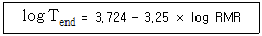
- 1.5 시간
- 2 시간
- 2.5 시간
- 3 시간
(정답률: 58%)
9. NIOSH에서 정한 중량물 취급작업 권고처(action limit. AL)에 영향을 가장 많이 주는 요인은 무엇인가?
- 빈도
- 수평거리
- 수직거리
- 이동거리
(정답률: 67%)
10. 물질에 관한 생물학적 노출지수(BEIs)를 측정하려 할 때, 반감기가 5시간을 넘어서 주중(週中)에 축적될 수 있는 물질로 주말작업 종류 시에 시료 채취하는 것은?
- 이황화탄소
- 자일렌(크실렌)
- 일산화탄소
- 트리클로로에틸렌
(정답률: 56%)
11. 외부환경의 변화에 신체반응의 항상성이 작용하는 현상의 명칭으로 적합한 것은?
- 신체의 변성현상
- 신체의 회복현상
- 신체의 이상현상
- 신체의 순응현상
(정답률: 76%)
12. 산업안전보건법령상의 충격소음 노출기준에서 충격소음의 강도가 140 dB(A)일 때 1일 노출회수는?
- 10
- 100
- 1000
- 10000
(정답률: 67%)
13. 어떤 작업의 강도를 알기 위해서 작업대사율(RMR)을 구하려고 한다. 작업 시 소요된 열량이 5000 kcal, 기초대사량이 1200 kcal, 안정 시 열량이 기초대사량의 1.2배인 경우 작업대사율은 약 얼마인가?
- 1
- 2
- 3
- 4
(정답률: 74%)
14. 직업성 피부질환과 원인이 되는 화학적 요인의 연결로 옳지 않은 것은?
- 색소 감소 – 모노벤질 에테르
- 색소 증가 - 콜타르
- 색소 감소 - 하이드로퀴논
- 색소 증가 – 3차 부틸 페놀
(정답률: 60%)
15. 국제노동기구(ILO)와 세계보건기구(WHO) 공동위원회에서 정한 산업보건의 정의에 포함된 내용으로 적합하지 않은 것은?
- 근로자의 건강 진단 및 산업재해 예방
- 근로자들의 육체적, 정신적, 사회적 건강을 유지·증진
- 근로자를 생리적, 심리적으로 적합한 작업환경에 배치
- 작업조건으로 인한 질병예방 및 건강에 유해한 취업방지
(정답률: 50%)
16. 산업안전보건법령상 보건관리자의 자격에 해당되지 않는 것은?
- 「의료법」에 따른 의사
- 「의료법」에 따른 간호사
- 「산업안전보건법」에 따른 산업안전지도사
- 「고등교육법」에 따른 전문대학에서 산업위생 분야에 학과를 졸업한 사람
(정답률: 80%)
17. 사업장에서 부적응의 결과로 나타나는 현상을 모두 고른 것은?
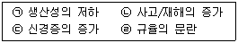
- ㉠, ㉡, ㉢
- ㉠, ㉢, ㉣
- ㉡, ㉢, ㉣
- ㉠, ㉡, ㉢, ㉣
(정답률: 81%)
18. 미국산업위생학술원(AIHA)에서 채택한 산업위생전문가가 지켜야 할 윤리강령의 구성이 아닌 것은?
- 국가에 대한 책임
- 전문가로서의 책임
- 근로자에 대한 책임
- 기업주와 고객에 대한 책임
(정답률: 84%)
19. 그리스의 히포크라테스에 의하여 역사상 최초로 기록된 직업병은?
- 납중독
- 음낭암
- 진폐증
- 수은중독
(정답률: 75%)
20. 피로에 관한 설명으로 옳지 않은 것은?
- 정신피로나 신체피로가 각각 단독으로 나타나는 경우가 매우 희박하다.
- 정신피로는 주로 말초신경계의 피로를, 근육피로는 중추신경계의 피로를 의미한다.
- 과로는 하룻밤 잠을 잘 자고 난 다음날 까지도 피로상태가 계속되는 것을 의미한다.
- 피로는 질병이 아니며 원래 가역적인 생체반응이고 건강장해에 대한 경고적 반응이다.
(정답률: 68%)
2과목: 작업환경측정 및 평가
21. 유사노출그룹을 분류하는 단계가 바르게 표시된 것은?
- 조직 → 공정 → 작업범주 → 유해인자
- 조직 → 작업범주 → 공정 → 유해인자
- 조직 → 유해인자 → 공정 → 작업범주
- 조직 → 작업범주 → 유해인자 → 공정
(정답률: 63%)
22. 펌프의 유량을 보정하는데 1차 표준으로서 가장 널리 사용하는 기기는?
- 오리피스미터
- 비누거품미터
- 건식가스미터
- 로타미터
(정답률: 81%)
23. 입자상 물질을 채취하기 위해 사용되는 직경분립충돌기에 비해 사이클론이 갖는 장점과 가장 거리가 먼 것은?
- 입자의 질량크기분포를 얻을 수 있다.
- 매체의 코팅과 같은 별도의 특별한 처리가 필요 없다.
- 호흡성 먼지에 대한 자료를 쉽게 얻을 수 있다.
- 충돌기에 비해 사용이 간편하고 경제적이다.
(정답률: 59%)
24. 태양광선이 내리쬐지 않는 옥내의 습구흑구온도지수(WBGT)의 계산식은?
- WBGT = (0.7×흑구온도) + (0.3×자연습구온도)
- WBGT = (0.3×흑구온도) + (0.7×자연습구온도)
- WBGT = (0.7×흑구온도) + (0.3×건구온도)
- WBGT = (0.3×흑구온도) + (0.7×건구온도)
(정답률: 79%)
25. 납과 그 화합물을 여과지로 채취한 후 농도를 분석할 수 있는 기기는?
- 원자흡광분석기
- 이온크로마토그래프
- 광학현미경
- 액체크로마토그래프
(정답률: 72%)
26. 흑연로 장치가 부착된 원자흡광광도계로 카드뮴을 측정 시 Black 시료를 10번 분석한 결과 표준편차가 0.03 μg/L 였다. 이 분석법의 검출한계는 약 몇 μg/L 인가?
- 0.01
- 0.03
- 0.09
- 0.15
(정답률: 58%)
27. 석면의 공기 중 농도를 표현하는 표준단위로 사용하는 것은? (단, 고용노동부 고시를 기준으로 한다.)
- ppm
- 개/cm3
- μm/m3
- mg/m3
(정답률: 85%)
28. 가스교환 부위에 침착할 때 독성을 일으킬 수 있는 물질로서 평균 입경이 4μm 인 입자상 물질은? (단, ACGIH 기준)
- 흡입성 입자상 물질
- 흉곽성 입자상 물질
- 복합성 입자상 물질
- 호흡성 입자상 물질
(정답률: 72%)
29. 가스크로마토그래프 내에서 운반기체가 흐르는 순서로 맞는 것은?
- 분리관 → 시료주입구 → 기록계 → 검출기
- 분리관 → 검출기 → 시료주입구 → 기록계
- 시료주입구 → 분리관 → 기록계 → 검출기
- 시료주입구 → 분리관 → 검출기 → 기록계
(정답률: 76%)
30. 액체포집법과 관련 있는 것은?
- 실리카겔관
- 필터
- 활성탄관
- 임핀져
(정답률: 63%)
31. 작업환경 측정결과가 다음과 같을 때, 노출지수는? (단, 상가작용 한다고 가정한다.)
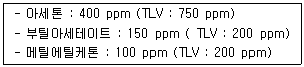
- 11.5
- 5.56
- 1.78
- 0.78
(정답률: 75%)
32. 강렬한 소음에 노출되는 6시간 동안 측정한 누적소음노출량은 110% 이었을 때, 근로자는 평균적으로 몇 dB의 소음수준에 노출된 것인가?
- 90.8
- 91.8
- 92.8
- 93.8
(정답률: 29%)
33. 작업장의 일산화탄소 농도가 14.9 ppm 이라면, 이 공기 1m3 중에 일산화탄소는 약 몇 mg 인가? (단, 0℃, 1기압 상태이다.)
- 10.8
- 12.5
- 15.3
- 18.6
(정답률: 39%)
34. MCE 막여과지에 관한 설명으로 틀린 것은?
- MCE 막여과지는 수분을 흡수하지 않기 때문에 중량분석에 잘 적용된다.
- MCE 막여과지는 산에 쉽게 용해된다.
- 입자상 물질 중의 금속을 채취하여 원자흡광법으로 분석하는데 적절하다.
- 시료가 여과지의 표면 또는 표면 가까운 곳에 침착되므로 석면의 현미경분석을 위한 시료 채취에 이용된다.
(정답률: 68%)
35. 하루 11시간 일할 때, 톨루엔(TLV : 100 ppm)의 노출기준을 Brief 와 Scala 의 보정 방법을 이용하여 보정하면 얼마인가? (단, 1일 노출시간을 기준으로 할 때, TLV 보정계수 = 8/H×(24-H)/16 이다.)
- 0.38 ppm
- 38 ppm
- 59 ppm
- 169 ppm
(정답률: 63%)
36. 부피비로 0.001%는 몇 ppm 인가?
- 10
- 100
- 1000
- 10000
(정답률: 64%)
37. 배경소음(Background Noise)을 가장 올바르게 설명한 것은?
- 관측하는 장소에 있어서의 종합된 소음을 말한다.
- 환경 소음 중 어느 특정 소음을 대상으로 할 경우 그 이외의 소음을 말한다.
- 레벨변화가 적고 거의 일정하다고 볼 수 있는 소음을 말한다.
- 소음원을 특정시킨 경우 그 음원에 의하여 발생한 소음을 말한다.
(정답률: 77%)
38. 가스상 물질을 검지관방식으로 측정하는 내용의 일부이다. ( ) 안에 들어갈 내용으로 옳은 것은? (단, 고용노동부 고시를 기준으로 한다.)
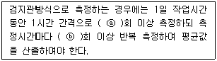
- ⓐ : 6, ⓑ : 2
- ⓐ : 4, ⓑ : 1
- ⓐ : 10, ⓑ : 2
- ⓐ : 12, ⓑ : 1
(정답률: 76%)
39. 벤젠 100mL에 디티존 0.1g을 넣어 녹인 용액을 10배 희석시키면 디티존의 농도는 약 몇 μg/mL 인가?
- 1
- 10
- 100
- 1000
(정답률: 52%)
40. 고열의 측정방범에 대한 내용이 다음과 같을 때, ( ) 안에 들어갈 내용으로 옳은 것은? (단, 고용노동부 고시를 기준으로 한다.)(오류 신고가 접수된 문제입니다. 반드시 정답과 해설을 확인하시기 바랍니다.)
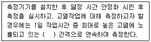
- 5분을 1분
- 10분을 1분
- 1시간을 10분
- 8시간을 1시간
(정답률: 67%)
3과목: 작업환경관리
41. 고압에 의한 장해를 방지하기 위하여 인공적으로 만든 호흡용 혼합가스인 헬륨-산소혼합가스에 관한 설명으로 옳지 않은 것은?
- 질소 대신에 헬륨을 사용한 가스이다.
- 헬륨의 분자량이 작아서 호흡저항이 적다.
- 고압에서 마취작용이 강하여 심해 잠수에는 사용하기 어렵다.
- 헬륨은 체외로 배출되는 시간이 질소에 비하여 50% 정도 밖에 걸리지 않는다.
(정답률: 73%)
42. 다음 중 아크 용접에서 용접흄 발생량을 증가시키는 경우와 가장 거리가 먼 것은?
- 아크 길이가 긴 경우
- 아크 전압이 낮은 경우
- 봉 극성이 (-)극성인 경우
- 토치의 경사각도가 큰 경우
(정답률: 57%)
43. 다음 중 작업장에서 사용물질의 독성이나 위험성을 줄이기 위하여 사용물질을 변경하는 경우로 가장 적절한 것은?
- 분체의 원료는 입자가 큰 것으로 전환한다.
- 금속제품 도장용으로 수용성 도료를 유기용제로 전환한다.
- 아조 염료 합성원료로 디클로로벤지딘을 벤지딘으로 전환한다.
- 금속제품의 탈지에 계면활성제를 사용하던 것을 트리클로로에틸렌으로 전환한다.
(정답률: 51%)
44. 다음 중 환경개선에 관한 내용과 가장 거리가 먼 것은?
- 분진작업에는 습식 방법의 고려가 필요하다.
- 제진장치의 선정에 있어서는 함유분진의 입경 분포를 고려한다.
- 유기용제를 사용하는 경우에는 되도록 휘발성이 적은 물질로 대체한다.
- 전체환기장치의 경우 공기의 입구와 출구를 근접한 위치에 설치하여 환기효과를 증대한다.
(정답률: 69%)
45. 물질안전보건자료(MSDS)에 포함되는 내용이 아닌 것은?
- 작업환경측정방법
- 대상화학물질의 명칭
- 안전·보건상의 취급주의 사항
- 건강 유해성 및 물리적 위험성
(정답률: 72%)
46. 고온작업환경에서 열중증의 예방대책으로 가장 잘 짝지어진 것은?
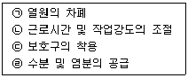
- ㉠, ㉡
- ㉡, ㉢
- ㉠, ㉡, ㉢
- ㉠, ㉡, ㉢, ㉣
(정답률: 78%)
47. 출력이 0.0⑤W 인 음원의 음력수준은 약 몇 dB 인가?
- 83
- 93
- 97
- 100
(정답률: 54%)
48. 온도 표시에 관한 내용으로 틀린 것은? (단, 고용노동부 고시를 기준으로 한다.)
- 실온은 15~20℃를 말한다.
- 미온은 30~40℃를 말한다.
- 상온은 15~25℃를 말한다.
- 찬 곳은 따로 규정이 없는 한 0~15℃의 곳을 말한다.
(정답률: 52%)
49. 다음 중 전리방사선의 장애와 예방에 관한 설명과 가장 거리가 먼 것은?
- 작업절차 등을 고려하여 방사선에 노출되는 시간을 짧게 한다.
- 방사선의 종류, 에너지에 따라 적절한 차폐대책을 수립한다.
- 방사선원을 납, 철, 콘크리트 등으로 차폐하여 작업장의 방사선량률을 저하시킨다.
- 방사선 노출 수준은 거리에 반비례하여 증가하므로 발생원과의 거리를 관리하여야 한다.
(정답률: 73%)
50. 다음 중 산소가 결핍된 장소에서 사용할 보호구로 가장 적절한 것은?
- 방진마스크
- 에어라인 마스크
- 산성가스용 방독마스크
- 일산화탄소용 방독마스크
(정답률: 85%)
51. 다음 중 분진작업장의 관리방법에 대한 설명과 가장 거리가 먼 것은?
- 습식으로 작업한다.
- 작업장의 바닥에 적절히 수분을 공급한다.
- 샌드블라스팅 작업 시에는 모래 대신 철을 사용한다.
- 유리규산함량이 높은 모래를 사용하여 마모를 최소화한다.
(정답률: 68%)
52. 다음 중 방독마스크의 흡착제로 주로 사용되는 물질과 가장 거리가 먼 것은?
- 활성탄
- 금속섬유
- 실리카겔
- 소다라임
(정답률: 59%)
53. 고압환경에 관한 설명으로 옳지 않은 것은?
- 산소의 분압이 2기압이 넘으면 산소중독증세가 나타난다.
- 폐 내의 가스가 팽창하고 질소기포를 형성한다.
- 공기 중의 질소는 4기압 이상에서 마취작용을 나타낸다.
- 산소의 중독작용은 운동이나 이산화탄소의 존재로 보다 악화된다.
(정답률: 59%)
54. 점음원에서 발생되는 소음이 10m 떨어진 곳에서 음압 레벨이 100 dB일 때, 이 음원에서 30m 떨어진 곳의 음압 레벨은 약 몇 dB 인가? (단, 점음원이 장해물이 없는 자유공간에서 구면상으로 전파한다고 가정한다.)
- 72.3 dB
- 88.1 dB
- 90.5 dB
- 92.3 dB
(정답률: 46%)
55. 다음 중 자외선에 관한 설명으로 가장 거리가 먼 것은?
- 자외선에 파장은 가시광선보다 작다.
- 자외선에 노출 되어 피부암이 발생할 수 있다.
- 구름이나 눈에 반사되지 않아 대기오염의 지표로도 사용된다.
- 일명 화학선이라고 하며 광화학반응으로 단백질과 핵산분자의 파괴, 변성작용을 한다.
(정답률: 65%)
56. 벽돌 제조, 도자기 제조 과정 등에서 발생하고, 폐암, 결핵과 같은 질환을 유발하는 진폐증은?
- 규폐증
- 면폐증
- 석면폐증
- 용접폐증
(정답률: 61%)
57. 수심 20m인 곳에서 작업하는 잠수부에서 작용하는 절대압은?
- 1기압
- 2기압
- 3기압
- 4기압
(정답률: 76%)
58. 전리 방사선 중 입자방사선이 아닌 것은?
- α(알파)입자
- β(베타)입자
- γ(감마)입자
- 중성자
(정답률: 67%)
59. 재질이 일정하지 않고 균일하지 않아 정확한 설계가 곤란하며 처짐을 크게 할 수 없어 진동방지보다는 고체음의 전파방지에 유익한 방진재료는?
- 코르크
- 방진고무
- 공기용수철
- 금속코일용수철
(정답률: 68%)
60. 소음노출량계로 측정한 노출량이 200% 일 경우 8시간 시간가중평균(TWA)은 약 몇 dB 인가? (단, 우리나라 소음의 노출기준을 적용한다.)
- 80 dB
- 90 dB
- 95 dB
- 100 dB
(정답률: 39%)
4과목: 산업환기
61. 후드의 선정원칙으로 틀린 것은?
- 필요환기량을 최대한으로 한다.
- 추천된 설계사양을 사용해야 한다.
- 작업자의 호흡영역을 보호해야 한다.
- 작업자가 사용하기 편리하도록 한다.
(정답률: 76%)
62. 국소배기장치의 원형덕트의 직경은 0.173 m 이고, 직선 길이는 15 m, 속도압은 20 mmH2O, 관마찰계수가 0.016 일 때, 덕트의 압력손실(mmH2O)은 약 얼마인가?
- 12
- 20
- 26
- 28
(정답률: 34%)
63. 다음은 덕트내 기류에 대한 내용이다. ㉠과 ㉡에 들어갈 내용으로 맞는 것은?
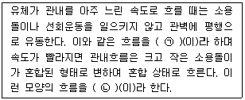
- ㉠ : 난류, ㉡ : 층류
- ㉠ : 층류, ㉡ : 난류
- ㉠ : 유선운동, ㉡ : 층류
- ㉠ : 층류, ㉡ : 천이유동
(정답률: 77%)
64. 작업장 내의 실내환기량을 평가하는 방법과 거리가 먼 것은?
- 시간당 공기교환 횟수
- Tracer 가스를 이용하는 방법
- 이산화탄소 농도를 이용하는 방법
- 배기 중 내부공기의 수분함량 측정
(정답률: 65%)
65. 주형을 부수고 모래를 터는 장소에서 포위식 후드를 설치하는 경우의 최소 제어풍속으로 맞는 것은?
- 0.5 m/s
- 0.7 m/s
- 1.0 m/s
- 1.2 m/s
(정답률: 42%)
66. 각형 직관에서 장변이 0.3m, 단변이 0.2m 일 때, 상당직경(equivalent diameter)은 약 몇 m 인가?
- 0.24
- 0.34
- 0.44
- 0.54
(정답률: 46%)
67. 송풍기에 관한 설명으로 틀린 것은?
- 원심력 송풍기로는 다익팬, 레이디얼팬, 터보팬 등이 해당된다.
- 터보형 송풍기는 압력 변동이 있어도 풍량의 변화가 비교적 작다.
- 다익형 송풍기는 구조상 고속회전이 어렵고, 큰 동력의 용도에는 적합하지 않다.
- 평판형 송풍기는 타 송풍기에 비하여 효율이 낮아 미분탄, 톱밥 등을 비롯한 고농도 분진이나 마모성이 강한 분진의 이송용으로는 적당하지 않다.
(정답률: 55%)
68. 송풍기의 동작점(point of poeration) 설명으로 옳은 것은?
- 송풍기의 정압과 송풍기의 전압이 만나는 점
- 송풍기의 성능곡선과 시스템 요구곡선이 만나는 점
- 급기 및 배기에 따른 음압과 양압이 송풍기에 영향을 주는 점
- 송풍량이 Q일 때 시스템의 압력손실을 나타낸 곡선
(정답률: 73%)
69. 150℃, 720 mmHg에서 100m3 인 공기는 21℃, 1기압에서는 약 얼마의 부피로 변하는가?
- 47.8 m3
- 57.2 m3
- 65.8 m3
- 77.2 m3
(정답률: 56%)
70. 다음의 조건에서 캐노피(canopy) 후드의 필요환기량( m3/s)은?
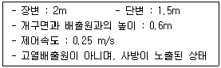
- 1.47
- 2.47
- 3.47
- 4.47
(정답률: 32%)
71. 일반적으로 사용하고 있는 흡착탑 점검을 위하여 압력계를 이용하여 흡착탑 차압을 측정하고자 한다. 차압의 측정범위와 측정방법으로 가장 적절한 것은?
- 차압계 정압측정범위 : 50 mmH2O
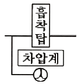
- 차압계 정압측정범위 : 50 mmH2O
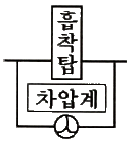
- 차압계 정압측정범위 : 500 mmH2O
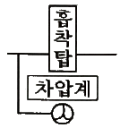
- 차압계 정압측정범위 : 500 mmH2O
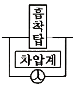
(정답률: 60%)
72. 직경 150mm 인 덕트 내 정압은 –64.5 mmH2O이고, 전압은 –31.5 mmH2O 이다. 이 때 덕트 내의 공기속도(m/s)는 약 얼마인가?
- 23.23
- 32.09
- 32.47
- 39.61
(정답률: 38%)
73. 용접용 후드의 정압이 처음에는 18 mmH2O 이였고, 이때의 유량은 50 m3/min 이었다. 최근에 조사해본 결과 정압이 14 mmH2O 이었다면, 최근의 유량(m3/min) 은?
- 44.10
- 46.10
- 48.10
- 50.10
(정답률: 35%)
74. 작업장 내에서는 톨루엔(분자량 92, TLV 50 ppm)이 시간당 300g 씩 증발되고 있다. 이 작업장에 전체 환기 장치를 설치할 경우 필요환기량은 약 얼마인가? (단, 주위는 21℃, 1기압이고, 여유계수는 5로 하며, 비중 0.87 톨루엔은 모두 공기와 완전혼합된 것으로 한다.)
- 110.98 m3/min
- 130.98 m3/min
- 4382.60 m3/min
- 7858.70 m3/min
(정답률: 40%)
75. 일반적으로 후드에서 정압과 속도압을 동시에 측정하고자 할 때 측정공의 위치는 후드 또는 덕트의 연결부로부터 얼마정도 떨어져 있는 것이 가장 적절한가?
- 후드 길이의 1~2배 지점
- 후드 길이의 3~4배 지점
- 덕트 직경의 1~2배 지점
- 덕트 직경의 4~6배 지점
(정답률: 52%)
76. 다음 설명에 해당하는 집진장치로 맞는 것은?
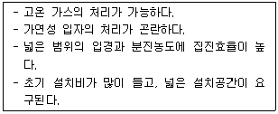
- 여과집진장치
- 벤츄리스크러버
- 전기집진장치
- 원심력집진장치
(정답률: 76%)
77. 환기와 관련한 식으로 옳지 않은 것은? (단, 관련 기호는 표를 참고하시오.)
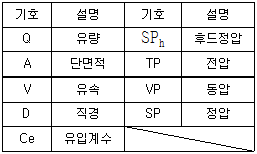
- Q = A V
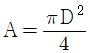
- VP = TP + SP
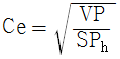
(정답률: 72%)
78. 포위식 후드의 장점이 아닌 것은?
- 작업장의 완전한 오염방지가 가능
- 난기류 등의 영향을 거의 받지 않음
- 다른 종류의 후드보다 작업방해가 적음
- 최소의 환기량으로 유해물질의 제거 가능
(정답률: 43%)
79. 전체환기시설을 설치하기 위한 조건으로 적절하지 않은 것은?
- 유해물질의 발생량이 많다.
- 독성이 낮은 유해물질을 사용하고 있다.
- 공기 중 유해물질의 농도가 허용농도 이하로 낮다.
- 근로자의 작업위치가 유해물질 발생원으로부터 멀리 떨어져 있다.
(정답률: 71%)
80. 후드의 유입계수가 0.75 이고, 관내 기류속도가 25 m/s 일 때, 후드의 압력 손실은 약 몇 mmH2O 인가? (단, 표준상태에서의 공기의 밀도는 1.20 kg/m3 으로 한다.)
- 22
- 25
- 30
- 31
(정답률: 35%)